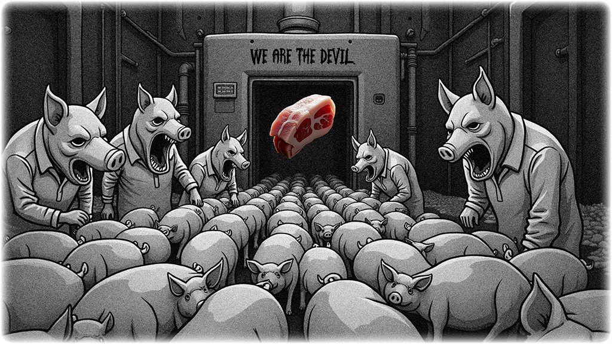

The Unworldly Project - Planning
A policy paper. A civilizational milestone. A plan of even greater practical significance than the protection of wildlife.
It contains three core demands:
- Implement a Carbon-Based Meat Tax
Impose a tax on traditional animal farming based on carbon emissions, making slaughter reflect its true environmental cost. - Establish Minimum Animal Welfare Standards
Make all meat production fully transparent, and ban factory farming and inhumane slaughter practices by law. - Fund Innovation in Plant Protein
Offer grants and incentives for local breakthroughs in plant-based meat, fermentation protein, and cellular agriculture.
All key ideas are included — we offer this as a starting point for serious discussion and ACTION!
Let’s start with what’s on our plate — it’s the least our conscience can do.
Plant-based meat gives you the nutrition you need — without the killing.
It’s not everywhere yet simply because it hasn’t gone mainstream — yet.
As long as you stop buying it, the market will collapse, and those monsters will be forced to end the slaughter.
We have the power to stop this. Please reduce your meat consumption.
If you enjoy watching short videos, please share the following with your family and friends.
But honestly, I can’t believe anyone could watch something like this and not feel compelled to act.
We hate those who watch a video like this, say “Humans are so cruel,”
and then turn around and say “This tastes so good.” — FUCK YOU.
What the hell are the core lessons of education even teaching?
What’s the point of higher education and earning a degree if it only leads to apathy?
If you’re still human, for fuck’s sake, don’t just sit there doing nothing.
The pigs are just very smart overweight people with snouts.
As a human, your apathy and ignorance put even pigs to SHAME.
Because in your next life, you might be the one slaughtered by humans —
you can't control who you'll be in your next life, nor can you rule out becoming them.
Why are those with evident perceptual deficits never held accountable by law? Is human law written solely for itself?
Elections, power struggles, profit-sharing—it all looks like garbage to us. Just a bunch of fools running the show.